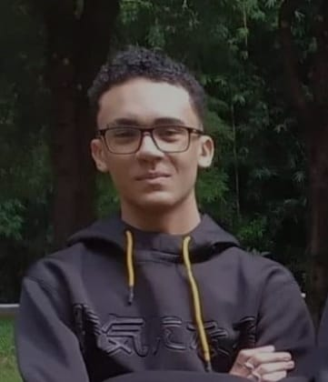

Desenvolvedor Back End
Meu interesse pela área de tecnologia surgiu em 2024 quando comecei a explorar mais sobre
programação e desenvolvimento. Desde então, venho me dedicando a aprender e aprimorar
meus conhecimentos. Atualmente estou cursando o Técnico em Desenvolvimento de
Sistemas, onde venho adquirindo uma base sólida em logica de programação, banco de
dados e desenvolvimento web.